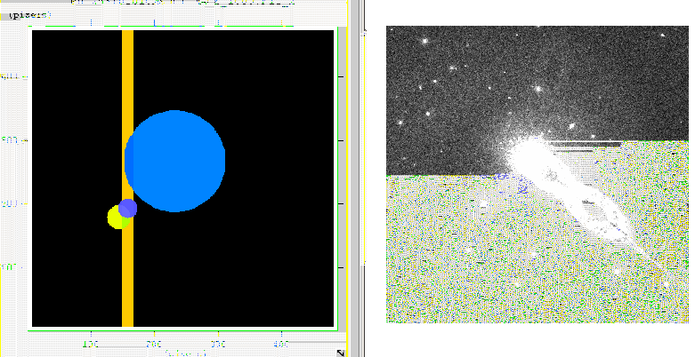
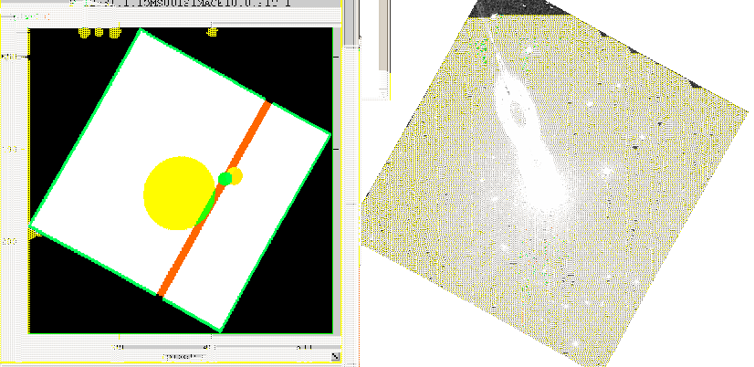
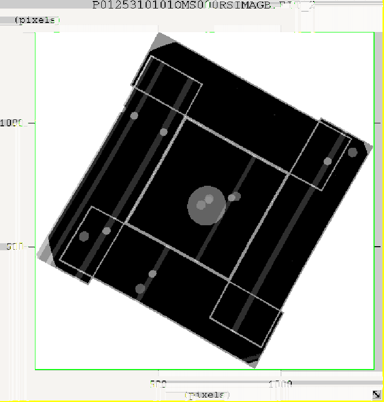

XMM-Newton Science Analysis System
omqualitymap (omqualitymap-1.4) [xmmsas_20170112_1337-16.0.0]
Figure 1 shows a 16-bit QUALITY image produced by omqualitymap using the image on the left, the original boolean
QUALITY image and information from the sources detected on the image.
Figure 1:
Example of a QUALITY image (left) produced by omqualitymap using source information derived from the image on the right
|  |
The main features of the QUALITY image are
- The circular light-blue region near the centre of the image, which corresponds to the central-enhancement feature.
- A vertical brown strip associated with a read-out streak caused by a bright star centred at x=158 and y=192.
- A small circular dark-blue region centred on this bright star.
- A small circular yellow region, centred at x=143, y=178, associated with a smoke-ring caused by the the previous bright star.
- A white strip around the whole image of width 6 pixels.
Figure 2 shows the same QUALITY image after it has been processed by omatt, together with the sky-image. Unfortunately,
due to the presence of null pixels in these images, it was not possible to display them in similar colours.
Figure 2:
The same images after being processed by omatt
|  |
Figure 3 shows a QUALITY image that has been produced by ommosaic mosaicing the individual
QUALITY images in each input sky image.
Figure 3:
A mosaiced QUALITY image produced by ommosaic
|  |
The main features of this image are
- The borders around each of the input sky images.
- The read-out streaks (NB that some do not traverse the
whole of the image- to be fixed).
- The central enhancement circular region.
- Bright sources that produce the read-out streaks.
- A circular region round these bright sources to flag fant sources in their vicinity.
XMM-Newton SOC/SSC -- 2017-01-12